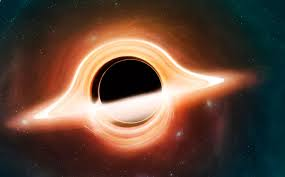

Black holes are among the most fascinating and enigmatic objects in the universe. They are regions in space where gravity is so intense that nothing, not even light, can escape their pull. This immense gravitational force results from a substantial amount of mass being compressed into an incredibly small area. The boundary surrounding a black hole is known as the event horizon; once crossed, escape becomes impossible.
🌀 Types of Black Holes
1.Stellar Black Holes: These form when massive stars exhaust their nuclear fuel and collapse under their own gravity. They typically possess masses ranging from about 5 to several tens of times that of our Sun.

Supermassive Black Holes: Found at the centers of most galaxies, including our Milky Way, these giants have masses ranging from millions to billions of solar masses. Their formation is still under investigation, with theories suggesting they may originate from the direct collapse of massive gas clouds or through the merging of smaller black holes .
2.Intermediate Black Holes: These are hypothesized to have masses between stellar and supermassive black holes. Evidence for their existence is growing, but they remain elusive.
Space
3.Primordial Black Holes: Theoretical black holes that may have formed shortly after the Big Bang due to high-density fluctuations in the early universe. They could range in size from tiny to massive and are considered potential candidates for dark matter .
🔭 Discovery and Observation
Historical Background: The concept of black holes dates back to 1783 when John Michell proposed the idea of "dark stars" with gravity so strong that light couldn't escape. However, it wasn't until 1916 that Karl Schwarzschild provided a solution to Einstein's equations of general relativity, describing what we now understand as a black hole .
American Museum of Natural History
Astronomy Magazine
First Confirmed Detection: In 1971, astronomers identified Cygnus X-1 as the first widely accepted black hole, based on its X-ray emissions and the behavior of its companion star .
Sky at Night Magazine
+1
NASA
+1
Imaging a Black Hole: In 2019, the Event Horizon Telescope collaboration released the first image of a black hole's event horizon in the galaxy M87, providing visual confirmation of these objects' existence.
⚙️ Formation and Growth
1.Stellar Collapse: When massive stars deplete their nuclear fuel, their cores collapse, leading to the formation of stellar black holes.
2.Accretion and Mergers: Black holes can grow by accreting matter from their surroundings or by merging with other black holes. Observations from the James Webb Space Telescope have revealed instances of rapid growth in early supermassive black holes, challenging existing theories .
Wikipedia
Reuters
+1
Wikipedia
+1
Direct Collapse: Some theories suggest that supermassive black holes could form directly from the collapse of massive gas clouds in the early universe, bypassing the stellar phase .
🧪 Physical Properties and Phenomena
2.Singularity: At the core of a black hole lies the singularity, a point of infinite density where the laws of physics as we know them cease to apply.
3.Event Horizon: This is the "point of no return" surrounding a black hole. Once an object crosses this boundary, it cannot escape the black hole's gravitational pull.
Encyclopedia Britannica
4.Hawking Radiation: Proposed by Stephen Hawking, this theoretical radiation suggests that black holes can emit particles due to quantum effects near the event horizon, potentially leading them to evaporate over time.
5.Gravitational Waves: The collision and merger of black holes produce ripples in spacetime known as gravitational waves. These were first detected by the LIGO observatory in 2015, confirming a major prediction of general relativity.
🔬 Recent Discoveries and Research
1.Tidal Disruption Events (TDEs): NASA's Hubble Space Telescope captured a TDE where a black hole consumed a star, providing insights into the behavior of matter under extreme gravitational forces .
The Times of India
2.Laboratory Simulations: Scientists have recreated aspects of black hole physics in laboratory settings, such as the "Black Hole Bomb" phenomenon, enhancing our understanding of energy amplification due to black hole spin .
The Times of India
3.Milky Way's Largest Stellar Black Hole: Astronomers discovered BH3, the most massive stellar black hole in our galaxy, weighing 33 times the mass of the Sun .
The Guardian
🧭 Black Holes and the Universe
Black holes play a crucial role in the evolution of galaxies and the structure of the universe. Their immense gravitational influence affects star formation, galactic dynamics, and the distribution of matter. Studying black holes also provides a testing ground for theories of gravity and quantum mechanics, pushing the boundaries of our understanding of fundamental physics.
For a more visual and detailed explanation of black holes, you might find the following video informative:
Feel free to ask if you have more specific questions or need further information on any aspect of black holes!